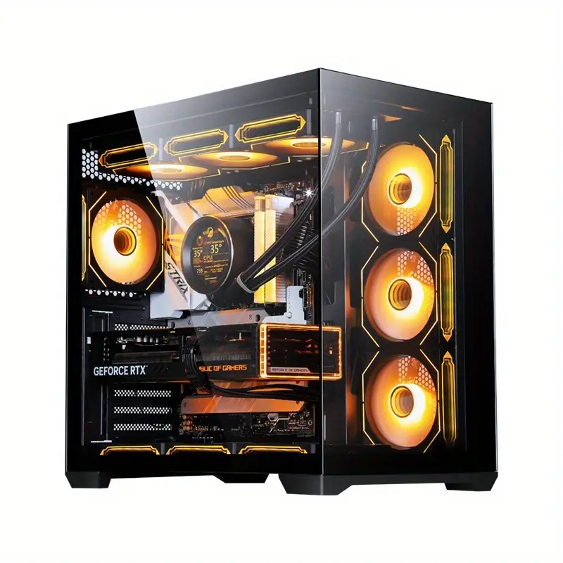
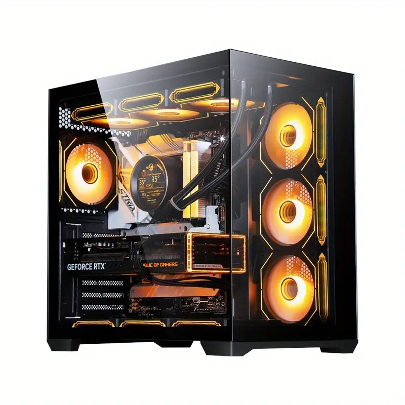
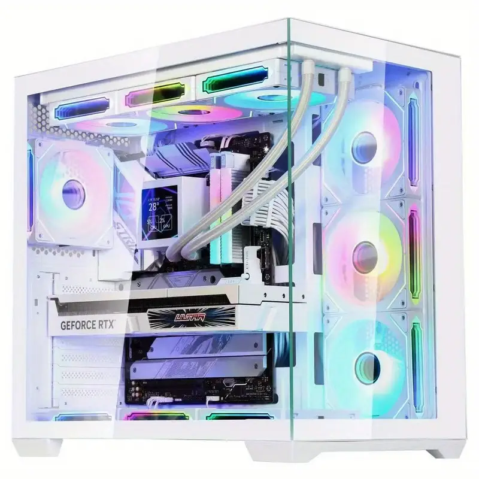
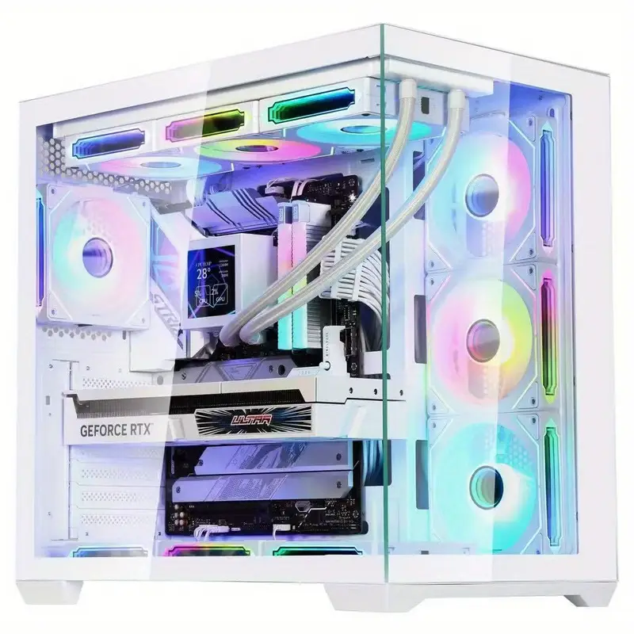
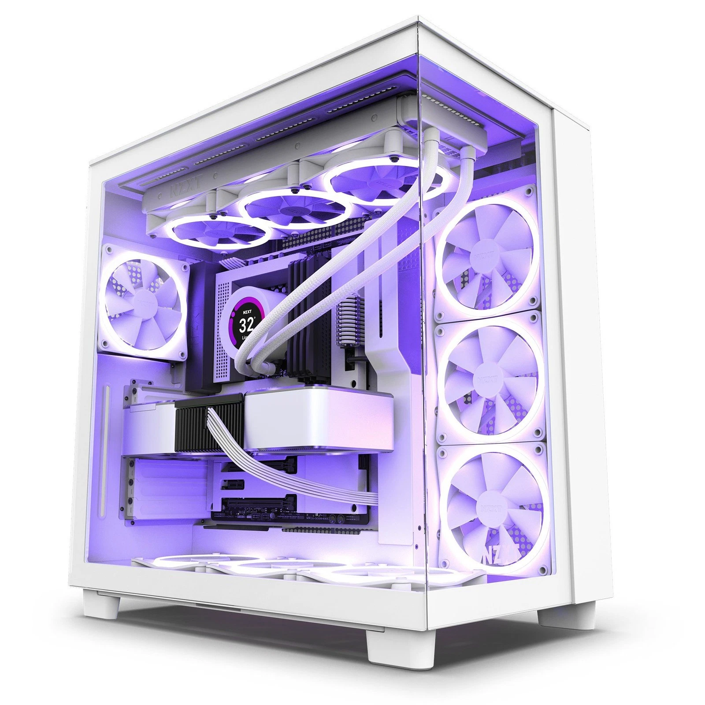
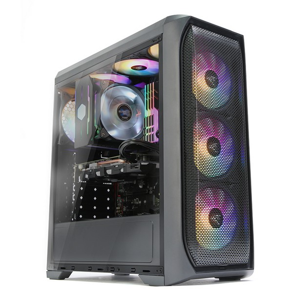
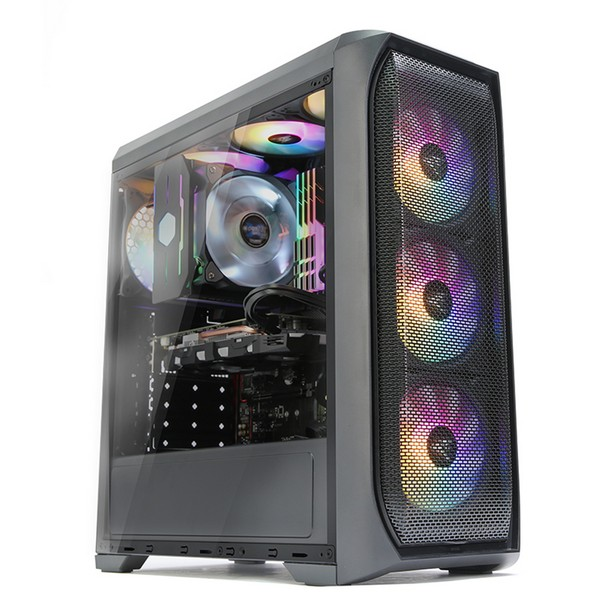
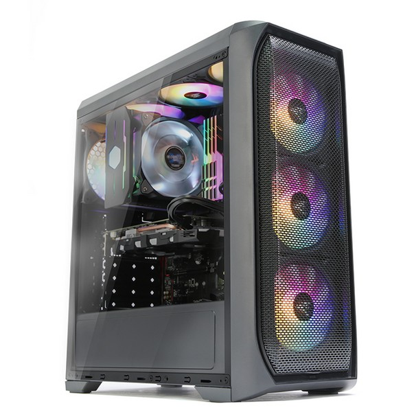

Welcome to G-Builds, a leading provider of high-quality computer components, hardware, and accessories. Since our establishment, our mission has been to deliver top-notch products, reliable service, and expert advice to individuals, professionals, and businesses looking to build, upgrade, or maintain their computing systems. We take pride in offering an extensive selection of premium computer components, including processors, graphics cards, motherboards, RAM, storage devices, power supplies, cooling systems and PC cases. Whether you are assembling a high-performance gaming rig, building a professional workstation, or simply upgrading your current setup, we are committed to providing products that meet the highest standards of performance and reliability. Our team consists of knowledgeable and experienced professionals who are passionate about technology. We are dedicated to helping our customers find the most suitable components tailored to their needs, offering guidance throughout the entire selection and purchasing process. Additionally, we provide expert support for custom PC builds, ensuring that every system runs smoothly and efficiently. At G-Builds, customer satisfaction is our highest priority. We believe that trust, transparency, and quality service form the foundation of lasting relationships with our clients. Our commitment to excellence extends beyond just selling products — we strive to deliver a complete and seamless experience, from the moment you browse our catalog to after-sales support. Thank you for choosing G-Builds as your trusted partner in technology. We look forward to being part of your journey in creating powerful and reliable computing solutions.
About Us
 

 



 

